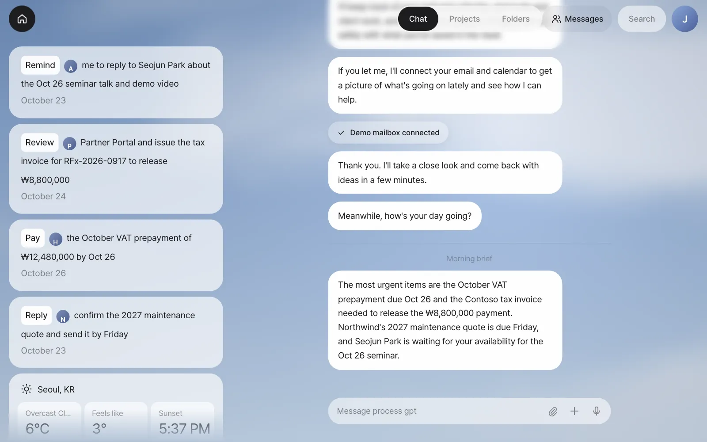
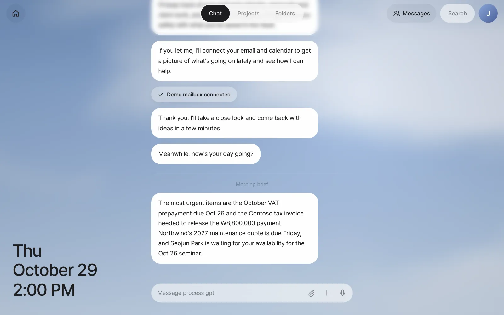
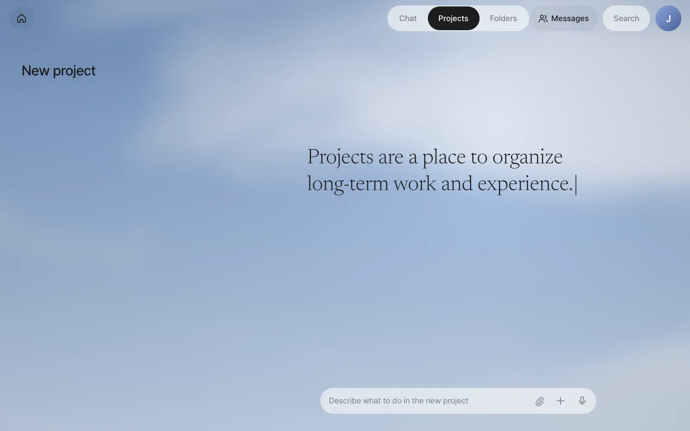
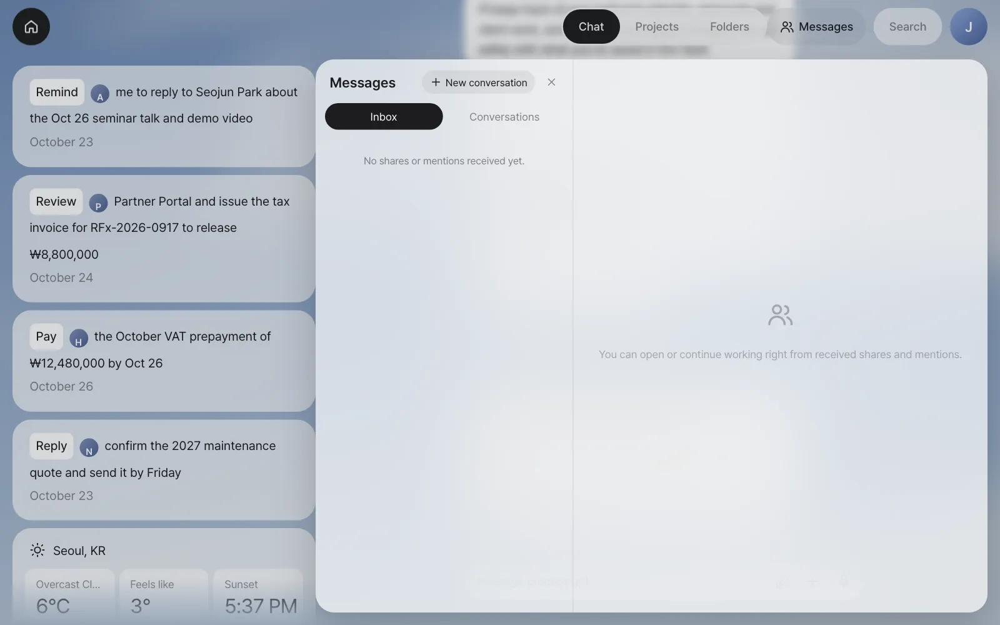
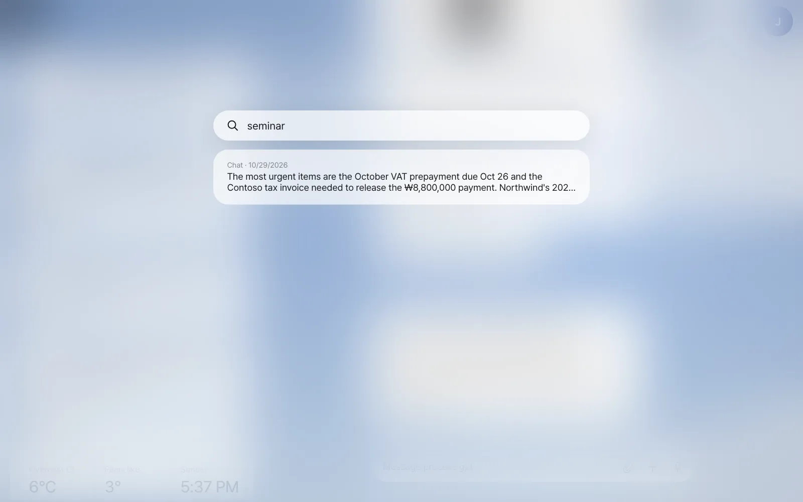
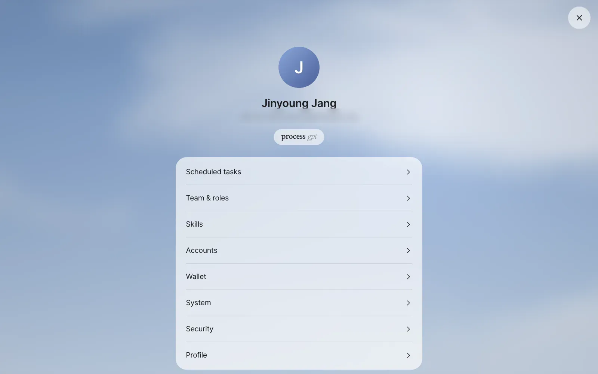
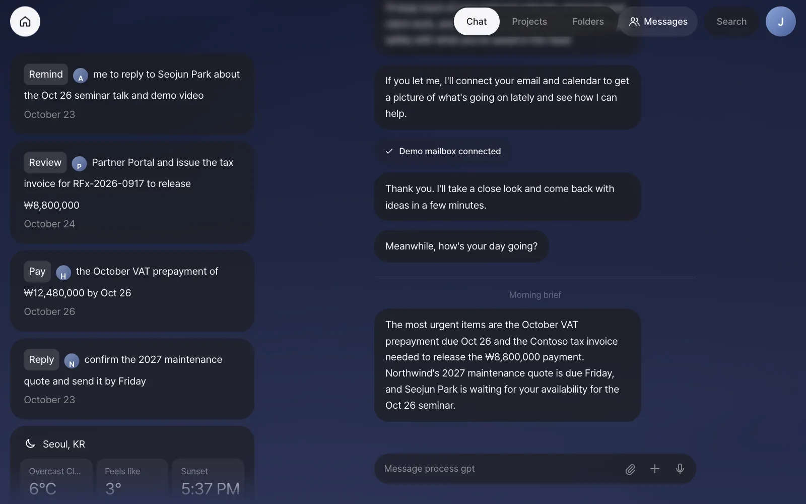
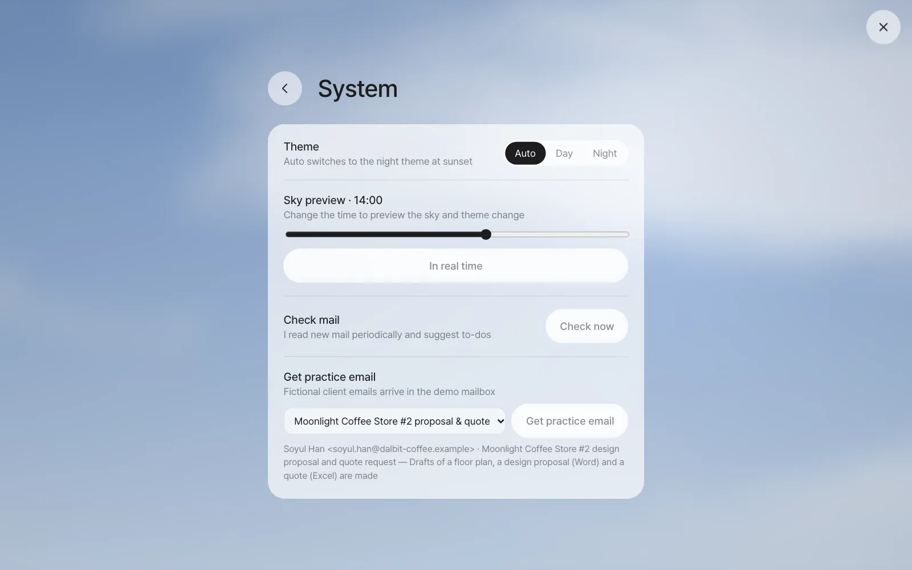
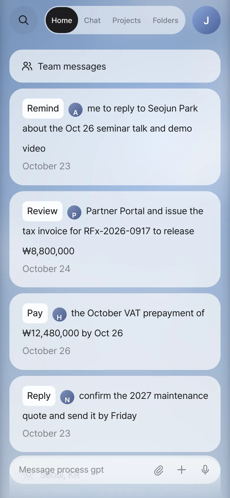

Take one lap around Home cards, Chat, the top bar (Chat · Projects · Folders, Messages, Search, Settings), day and night, and the phone layout. This app has a single screen, and you ask for almost everything through one input box in the middle.
One screen#
You finished your first login and mail connection in Chapter 1, so before the hands-on work, take a lap around the screen. Unlike business systems with many menus and pages, Process GPT Lite works on a single screen. On the left, the things to take care of now pile up as cards (Home). In the middle is your conversation with the assistant, and at the bottom is the input box. Whatever you do, you ask for it in words in the input box, and the result comes back as a card in the conversation.

| Where | Name | What it does | More |
|---|---|---|---|
| Round house button, top left | Home | Opens and closes Home (the card collection) | Below |
| Top center | Chat · Projects · Folders | Switches between three workspaces | Below |
| Top right | Messages | The messenger and inbox you share with teammates | Chapter 14·Chapter 15 |
| Top right | Search | Find words in past conversations | Below |
| Circle at the far right | Settings | A circle with the first letter of your name. Schedules, team, skills, accounts, security | Below |
| Bottom center | Input box | Ask in words. 📎 attach files, ＋ new panel, 🎙 dictation | Chapter 3 |
Home — what to take care of now#
Home is a collection of cards the assistant puts up to say "Take care of this now." You connected the demo mailbox in Chapter 1, so the assistant read the five emails and made cards for the four that need action (it skipped one newsletter).
The English word at the start of each card is what the assistant will do for you. Click a card and the assistant starts that work in Chat (Chapter 5).
| Verb | Meaning | Verb | Meaning |
|---|---|---|---|
| Reply | Reply to it | Review | Review it |
| Pay | Pay it | Call | Call someone |
| Release | Take care of it (release a hold) | Book | Book it |
| Remind | Reminder | Sign | Sign it |
| Add | Add it |
When you hover over a card, an × appears at its top right so you can clear it. Home also collects these cards.
| Card | When it appears | Chapter |
|---|---|---|
| Decision · Input | When a step of a process is assigned to you. For steps with choices (such as approvals), you decide right on the card | Chapter 18 |
| Share · Mention · Request | When a teammate sends you a file or calls you with @ | Chapter 14 |
| Suggestion · Constraint | When a process is suggested from repeated work (administrators), or when a new bottleneck appears in a process | Chapter 19·Chapter 20 |
| Draft review | When a customer email asks for documents and the assistant has made drafts in advance | Chapter 9 |
| Panel app | Mini apps you made by asking (to-do list, leave management, and so on) | Chapter 12 |
| Weather | Always there. The weather and sunset time for the same location as the sky background | |
| New panel | The button at the very bottom. Click it and describe the panel you want | Chapter 12 |
Click the house button again and Home folds away, leaving the weekday, date and time in large type in its place. Fold it when you want to focus on the conversation.

Chat — one long conversation#
Chat in the middle is one long conversation. You don't need to make new chat rooms. You can ask about a hotel for a business trip in the middle of talking about Moonlight Coffee, and mail briefs and the results of scheduled tasks also pile up here. Mixing topics is fine because the assistant decides, for each message, which story it follows up on, and keeps it in a separate conversation by topic. Once there are two or more conversations, N conversations · view by context appears at the top of Chat (Chapter 4).
Here are the small marks worth noticing in Chat.
- Date line — Where the day changes, a date like "Wednesday, October 28" appears.
- ··· Read — Appears under the last message you sent. It means the assistant received it.
- Status line — While the assistant works, what it's doing now appears faintly just above the input box, like "Searching" or "Creating document."
- Divider — Work the assistant started on its own, like a "Morning brief" or "Mail · (client) quote request," goes under a divider.
Projects and folders#
The three tabs Chat · Projects · Folders at the top are your workspaces.
| Space | What it's for | Chapter |
|---|---|---|
| Chat | Everyday work. A long conversation with the assistant | Chapter 3–Chapter 6 |
| Projects | A place to keep long-running work separate. Write what you need to do in New project on the left and a titled project is created. Conversations inside it don't mix with Chat. Running processes also show up here | Chapter 18 |
| Folders | Shared folders the team uses together. Keep files here like a drive, and edit the same work in several variations to compare them | Chapter 13 |

Messages, Search, Settings#
Messages is the messenger you use with teammates. Inbox holds outputs teammates shared and @mentions that called you, and Conversations holds one-on-one and group rooms. It's empty for now while you work alone. You'll fill it with Minji Kim and Seoyeon Park in Part 4.

Search finds words in your chat and project messages so far. For example, type seminar and the sentence in the Morning brief that mentions the seminar appears. Click a result to go to that conversation.

Open Settings by clicking the circle at the far right.

| Menu | What's in it | Chapter |
|---|---|---|
| Scheduled tasks | A list of work you set up, like "Every morning at 8…", and its run history | Chapter 11 |
| Team & roles | The teammate list, and who takes which process role. Only administrators change it | Chapter 18·Chapter 25 |
| Skills | The list of saved work methods (skills) and their contents | Chapter 10 |
| Accounts | Your name, the screen language, mail and external service connections (Change connection), site logins, API keys (Vault) | Chapter 1·Chapter 5·Chapter 6 |
| Wallet | Payment cards (Vault) | Chapter 6 |
| System | Theme (auto, day, night), sky preview, check mail now, and Get practice email if you use the demo mailbox | Below·Chapter 5 |
| Security | Vault encryption info, checking your Vault, Vault activity log | Chapter 6 |
| Profile | Name, email, date of birth (view only. Change next to the name opens Accounts) |
Day and night#
The sky in the background isn't a picture. It's the sky at your location right now. The app calculates the sun's height to pick the colors, and it reflects the weather (clouds, rain) too. When the sun sets, the whole screen switches to the night theme.

In Settings › System, you can choose the theme from Auto, Day and Night. Move the Sky preview slider to preview the sky and theme at another time, and click In real time to go back. Check mail › Check now on the same screen reads your mail right away instead of waiting for the next cycle. If you connected the demo mailbox, Get practice email is at the very bottom, where you can pick fictional client emails for the exercises (Chapter 5).

Fix the time with the address
Add ?hour=21 to the end of the address to open the sky at that time. Use something like ?hour=14 when you always want a presentation screen to show daytime. The screenshots in this tutorial were taken that way too.
Phones and Android#
On a narrow screen (a phone), the layout changes. Home · Chat · Projects · Folders tabs appear at the top, Home becomes a full-screen tab, and the input box sits below it. Team messages go into a card at the top of Home.

On Android, there's also an app you can use by just entering the server address (demo video). To make the install PC reachable from other devices, see "Ports and addresses" in Chapter 1.
Watch the video
A tour of Process GPT Lite shows everything from the first login to Home cards and the night theme in one go.
Next#
Now that you know the layout, it's time to hand over some work. In the next chapter, you paste Moonlight Coffee's Store #2 request into the assistant and get a summary table and a checklist back (Chapter 3).
Check questions
- Fold Home and open it again. What do you see at the bottom left when it's folded?
- Search for
quotein Search. Which messages come up? - In Settings › System, move the sky preview to 7 PM, check whether the theme changes, then go back with In real time.
- Which email did each of the four cards on Home come from? Guess from the verbs alone.
Answer
- The weekday, date and time appear in large type.
- Messages containing
quotecome up with their dates, like the Morning brief sentence "…Northwind's 2027 maintenance quote is due Friday…". Search looks in the messages left in Chat, not in the original emails. - 7 PM is after sunset, so with the theme on Auto it switches to the night theme. If you fixed it to Day, only the sky changes and the theme stays the same.
- Remind (a request to speak at a seminar — reminds you to reply), Review (a payment on hold because a tax invoice wasn't issued — issue it to release the hold), Pay (a VAT prepayment notice — pay it), Reply (a maintenance quote request — confirm the quote and send it). The verbs and wording differ a little every run. The same email sometimes comes up as Reply instead of Remind, Release instead of Review, or Add instead of Reply.